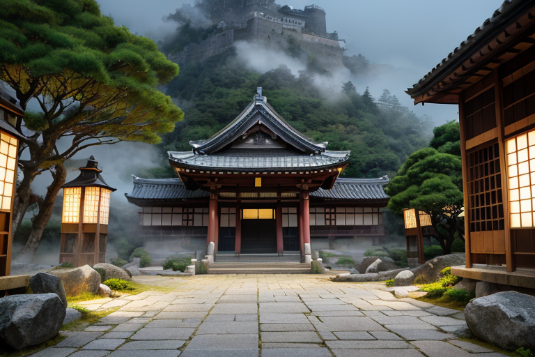
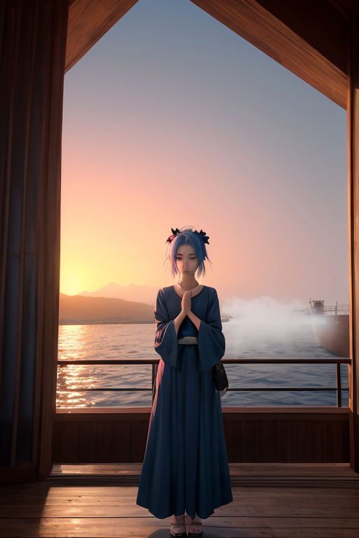
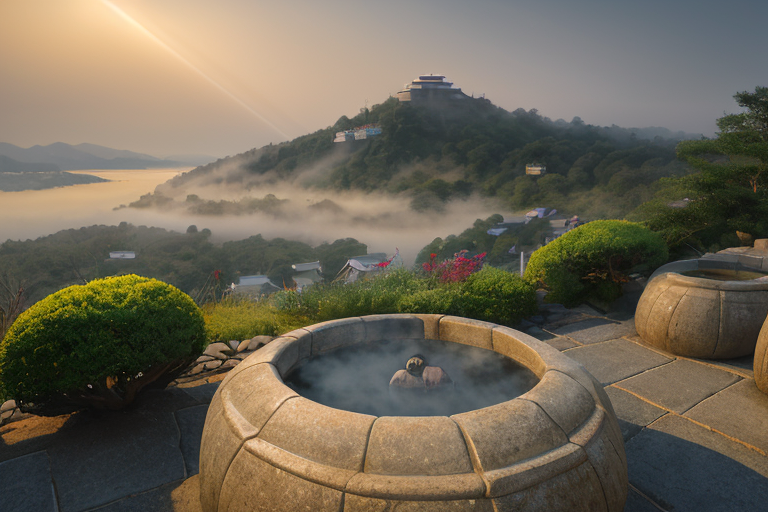
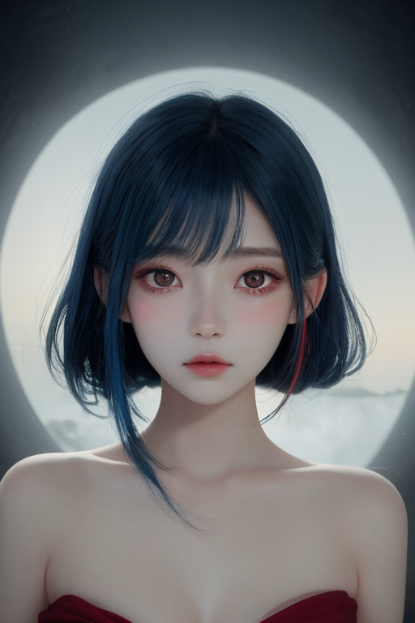
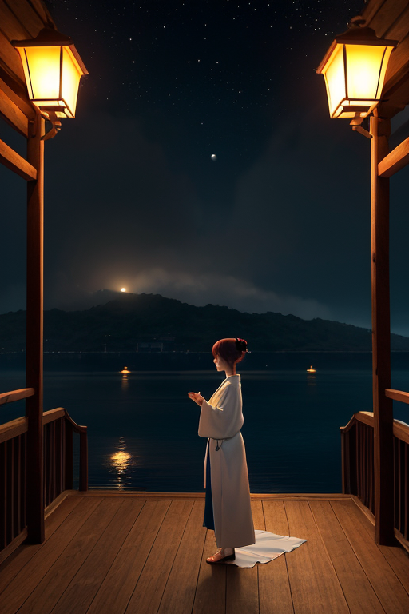

第一章 現実の兵庫
あなたはまだ気づいていない。この土地にも、王がいることを。
姫路城の白亜の天守が、春霞の中に浮かぶ。その静謐なたたずまいは、幾度の戦乱と震災をくぐり抜けた歴史そのものだ。城下の交差点を人々が行き交う。右へ、左へ、直進へ。無数の選択が、無意識のうちに積み重ねられる。
有馬温泉の奥、古びた石畳の参道。湯けむりの向こうに、金泉と銀泉が静かに湧き出る。ここは祈りの場であり、癒しの場であり、時には別れの場でもあった。旅人は湯に身を沈め、過去と未来の交差点に立つ。
淡路島の松原を吹き抜ける潮風。そこには、かつて激しい衝突が地層を刻んだ記憶がある。源氏と平家の帆影。そして、大地を引き裂いたあの日。すべては、この土地に「交差」という宿命を負わせた。
人々は知らない。自分たちの些細な選択が、無数の分岐点を生み出していることを。そして、そのすべての交差点に、青と赤の剣を紋章とする、無感情の調整者が立っていることを。

第二章 歪みの兆候
有馬温泉の金泉は、鉄分を多く含み、静かに湯気を立てていた。その湯に浸かる人々の祈りは、土地の歪みを感知するセンサーのように、ヒョウゴリア・クロスへと届く。受験合格、病の平癒、家族の安全。無数の願いは、交差点に立つ者へ向けられる無意識の問いかけだった。
王は神戸港の埠頭に立つ。異人館の窓に夕陽が反射し、赤く光る。港には多様な船が行き交い、異なる文化、物資、運命が衝突し、混ざり合う。妖精クロッサは、そのすべての交差を記録し、コウベリアは波の衝突が生むエネルギーをそっと分散させる。彼らの仕事は、巨大な津波を完全に止めることではない。ほんの数秒、その到達を遅らせること。その僅かな時間が、港で働く誰かの、逃げるという選択を可能にするかもしれない。
王は感情を持たないはずだった。しかし、祈りの密度が高まる阪神・淡路大震災の追悼の日。人々の「なぜ」という無念の念が、青と赤の剣に微かな軋みを生じさせた。それは、調整者としての静律線からの、ほんの少しの逸脱の始まりだった。

第三章 王の葛藤
有馬温泉の奥、人気のない外湯の畔で、ヒョウゴリア・クロスはただ立っていた。湯気が立ち昇る深い静寂。ここは、彼が最も「自分」に戻れる場所の一つだった。交差剣の柄を握る手に、先日の追悼の日、人々の無念が刻み込んだ軋みが、微かに残っている。
「なぜ、あの時、もっと早く調整できなかったのか」
「なぜ、この交差点で、あの命を救う偶然を選べなかったのか」
問いは、彼自身の内側から湧き上がる。感情を持たぬはずの調整者に、なぜこの葛藤が生じるのか。それは、この土地が背負う二つの大きな「交差」、源平の戦いと大震災が、あまりにも多くの「選択」と「別れ」の記憶で満ちているからかもしれない。淡路島を望むこの地で、彼は常に、救えるものと救えないものの、残酷な境界線上に立たされる。
彼は港円を静かに見つめた。青は海と静寂、赤は衝突と祈り。二つは決して混ざり合わない。混ざり合ってはならない。交差王の役割は、あくまで微調整。英雄になることではない。それでも、剣の軋みは、静律線という秩序そのものに対する、小さな、しかし確かな異議のようだった。彼は目を閉じ、湯気の向こうに広がる街のざわめきを、ただ聴いた。

第四章 妖精との対話
有馬温泉の湯煙の奥、交差王は座っていた。彼の前に、二つの光が揺らめく。一つは青く静かな港円の形、クロッサ。もう一つは、異国の波を纏ったコウベリアだ。
「王よ、あなたの葛藤は祈りです」クロッサの声は、二つの音が重なっていた。「交差点とは、選択以前の『間』。その沈黙に宿る全ての可能性を、我々は聴く」
コウベリアが淡路島の潮風のような息を漏らした。「港では、異なる波がぶつかり、砕けます。衝突そのものが、新たな均衡への道。神戸の街は、震災で砕け、混ざり、また立ち上がった。それは否定できない現実」
「我々が調整するのは、物理的な『衝撃』の一部だけ」クロッサが続ける。「しかし、そのわずかな遅れ、ほんの少しの緩和が、人間の魂に『間』を生む。祈りが生まれる『間』を。選択肢を見極める『間』を」
交差王は目を開けた。彼の内側で、青い静寂と赤い衝突が、決して解けることのない結び目を形作っていた。救うとは、英雄的に全てを変えることではない。この残酷な均衡を、ほんの少し、人間側に傾けること。それだけが、彼に許された交差点での選択だった。

第五章 微調整と余韻
神戸港の波は、月明かりに青く染まり、ゆっくりと岸壁を打つ。港円の紋章は、ここでは水面に映る月そのものだった。交差王は埠頭の影に立ち、目を閉じる。彼の感覚は、この土地に張り巡らされた無数の「選択」の糸へと拡がっていった。通勤路の分岐、ビジネスの契約、恋愛の告白、あるいは避難の一歩。全てが微細な精神波の交差点であり、彼の仕事は、その波同士が破壊的に共振しないよう、ほんのわずかに位相をずらすことだった。
彼は何も創造しない。ただ、必然の衝突が生む余剰の衝撃を、可能な限り分散させる。淡路島の漁師が網を修復する手の動きを0.1秒早め、城崎温泉の旅籠で迷える客の足を、少しだけ頑丈な廊下へ導く。それは救済ではなく、せいぜいが「気づき」の契機に過ぎない。
有馬温泉の地底からは、太古のプレートの軋みが、絶え間ない低音として響いている。彼はその音に耳を澄ませた。消せない歪み。止められない衝突。ならば、彼が選ぶべき交差点はただ一つ。その歪みと共に在りながら、それでも尚、次の朝を選び続ける人々の傍らに、微調整者として在ること。
彼の内側の葛藤は静まった。それは解消ではなく、接受だった。青と赤の紋章は、彼の中で、静かな港と、そこに注ぐ無数の川の流れのように、ただ在り続けた。
あなたの町にも、王がいる。